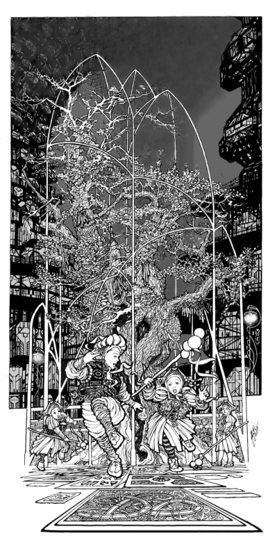

Eater (Part 1)
by
Andy Robertson
Eight miles above the Land, Khresten looks out into the night through one of the Eyes of the tower.
The oval screen before her shows a low hill in the middle of a barren plain. The scale bars indicate that it is about two furlongs in height and two miles wide. Set atop it is a knotted complex of rock strands, from which a twisting, iridescent stream of many-colored radiance fountains upward into the everlasting darkness. Glints of vulcanism drain away to the right, but beyond it and to the left there is no light at all and the enhancement routines of the Eye have sketched the naked surface of the Land in symbolic no-color contours as a random jumble of basalt tesserae in low relief.
There is no vegetation nearby, no physical structures of any sort, and no visible movement of beasts or giants. The lesser entities of the Land do not come near. In the ancient records this many-hued blur, dancing in the eternal night sixty leagues to the south-west of the Redoubt, is named The Rainbow That Dies.
Once more she applies herself. Quietening her breath. Humbling, stilling, and opening her mind. The continual fear is under control, nothing is reaching at her mind from out of the Land, and all thoughts of success or failure, of gaining acceptance in her guild, have been banished to irrelevance. She strives only to be part of the machine that scans the night.
Something touches her, inside her eyes.
She cannot sense into the upper dark, but the lower levels are truly open, and the screen becomes clear, detailed, reflecting her mind. The more subtle sight interfaces with the electronics as easily as it does with the organic nerves, delivering information that the computers of the Tower may glut themselves on or a mindblind co-observer may share if only instrument and operator are in harmony. It is an ancient trick of the Monstruwacans.
The images of six black tubes appear on the screen, drawn from her mind to overlay the barren dark. Their roots are spaced symmetrically about the gush of the Rainbow, and they flow upward, swaying, to open in monstrous flowers of night that fray upwards into nothing. Complex structures writhe within them. Peristaltic narrowings pump plasma skeins up and away from the Land, up to the region where the eyes of her soul refuse to construct more lies to overlay the glass and silicon grid before her with a thousand different shades of black. Each dark Flower is about a mile in height, and above the two-hundred fathom level the stalks show some of the typical dendritic character of the pneumavores, branching and rebranching into hard black points. Some of these points wave free, searching. Others are buried avidly in the central bright stream.
All is stable, and the Eye screen is delivering data at an optimum rate for the machines, but the human Monstruwacans who stand around her also require to know what is passing in the mind of their seer. Khresten begins her verbal subjective log.
"Six shapes, like flowers, grow from the Land. Each is ... thrice the height of the Rainbow."
Are they rooted? Of long residence?
"An air of permanence surrounds them. A year at least. Yet they are not fixed — they are cyclic — they are growing — they waver and change."
Are they Eaters?
". . . not of us. Of the Rainbow. That is why it is dying. Now they wait..."
What do they wait for?
". . . for something from above, Senior. They are waiting..."
. . . to welcome it, she realises suddenly and says. That is a knowledge that could never be relayed through the screen, but to her it is obvious, immanent.
Once more she feels the insect-touch on her retinae, and though she knows the danger she opens herself further. They are not conscious of me.
The screen is suddenly full of detail. The entities of the night come into a sharper focus. Each stalk is a braided, forking, writhing, column of darkness. Tiny motes of unlight stream up and down, pulsing irregular blobs carrying what might be dissolved shreds of their prey, checking and stumbling as they collide with each other. The Flowers are milking the Rainbow, building and strengthening themselves from its flesh, which they suck in and consume through pores that open and close on the tips of the dark branches. They are Eating it. It writhes from one side to the other, from one scourge to another, pierced, trapped, hooked, bled, and its essence diffuses away into the thorned webs of darkness. It is slowly growing weaker and smaller, though it seems still to try to fight its way upwards as its tormentors continue to grow larger and more extended.
The interface between the distant entities adsorbs Khresten's attention entirely, and a sense of the most awful pain, of the diminishment of that far bright being, overwhelms her. Her mind opens yet further. Despite all warnings and despite all her discipline she begins to lose touch with her own body as her center shifts towards the radiant agony, and she feels herself flowing out into the Night on a slow tide of nausea.
The glutted Flowers become clearly visible as pulsing fractals of black on black, their faces now tilting inward to form a cup, a web, a tangle or nest. They are connecting to each other, fusing together into a complex of threads that moves and links and breaks, not fully symmetrical, but somehow...wet.
And something new is beginning. The Flowers are not alone.
Something is descending out of the night. Threads of sentience fall from the upper dark, and here and there they touch the Land and dissolve to nothing, each returning a racing pulse of information which, in her heightened state, she feels as if it fled along her own nerves.
She cannot sense them until they flash: she cannot follow them back to their source: she knows them only by their echo, by the hollow in the night they leave as they vanish.
The threads fall around her and on her, each bringing a spark of unknowable otherness, and her soul reports each touch.
Again. And again.
Gripping, gripping as hard as she can, she is slipping from her points of anchorage. The Tower is tiny and distant, a complex clutter far behind her atop the vast pyramid of shielded life that is the Redoubt. A deep cold surrounds her, a physical sensation like freezing currents of wind, overlaid by the knowledge of ravenous things awakening and approaching. She has gone too far, been too trusting, made foolish errors lethal for a seer, and her immaterial spirit is losing its connection with her flesh and drifting helplessly, out into the Night Land.
I am lost.
But her body, tiny and far from her as a distant doll, still obeys her. With the faraway puppet-eyes of her flesh she can see that the Rainbow is now totally confined, nearly consumed, a smear of light with a thin pulse of despair echoing out from it. She babbles something as she closes her eyes, closes her mind, and releases the gesture of Guard, brushing against the light beams which interthread her fingers for this very purpose. Instantly the ravening electronic shields of the Tower flash into being round her. The room roars as the primary V-pulse fills the walls, the cybernetic memories are blanked with ruthless overriding authority, the screen glares white, then true black, and she falls back trembling in the chair as her returning soul snaps into union with her body.
Not too late. And from the eyes of the grave men and women who surround her, from their voices and hands, from their mind-touch, their speiking, she knows of nothing but affirmation, love and support.
The recovery, the interrogation, the report, are over. With her chaperone, apprentice Khresten descends towards the Redoubt and her home city within it. But she is still pale and shaken, still unstrung, her knees as melting wax, and the older woman must half support her as they ride down the central well of the tower.
When they are alone and there is no risk of indignity Khresten huddles against her companion. Let us go down quickly, quickly, she does not say. She blanks her mind, and thinks of home and her younger sisters. A ghost-ache traces the length of her spinal cord and her major nerve trunks, slowly fading as her errant Spirit knits itself back into her flesh. The tall old woman whispers to her and reminds her to be brave.
They fall two hundred fathoms, past level after level of active and passive observation systems — radar, optical, sonar, mindset — past datastores, libraries and power nodes, administrative clusters and support systems. Most of the levels are temporarily shut up and dead. Some are sealed and Forbidden. Others are in use, brightly lit, filled with tangles of enigmatic equipment and moving figures. Day and night, the Monstruwacans interrogate the Land.
They reach the tower's foundation. Below this is the truncated roof of the pyramidal Redoubt proper, three fathoms thick of imperishable metal, quick with subtle fires. But the Tower and the Redoubt are sealed from each other, and they must descend on their own feet, breathing with the aid of air-bells, past the final blanks that insulate the Tower and deny any infection entry to the Redoubt.
No dangerous path is permitted. No communications link, no optical fibre, no microwave beam, no quantum pair, may connect the last refuge of humanity with the observatory of the Monstruwacans that looks outward on the Land. Only human beings and written records ever make the passage.
They descend, wading the horizontal Air Clog. They give up the Word. They enter into the safety and the peace.
A day has passed, a night has begun. Far below the Tower, deep within the Lower Cities, in the womb of the Redoubt, in her home, in her house, in her bed, Khresten dreams.
Sleep-time in the Four Hundred and Third city breathes round her. Her two younger sisters sigh quietly, sleeping, a fathom or so away from her in the same room where she lies. Their minds brighten and dim in a slow rhythm, moving between REM dream and profound theta passivity. In the next chamber the minds of her mother and father are dim red coals radiating a quiet animal warmth. There is a whisper of fluttering fabric strips in the ventilator. A gentle radiance flickers over the walls, too soft to awaken the inhabitants, for in this age no-one ever utterly darkens a room or sleeps alone unless they must.
Khresten dreams that she wakes, that she dresses and walks out of the room. Obedient to an impulse she refuses to acknowledge she leaves her house and makes her way to the public viewing galleries — never empty at any time. She enters and takes a seat well separated from the others, as is her custom.
Before them, with dream-logic, is her screen from the Tower, now somehow grown to the typical dimensions of a viewing gallery. But all is safe now. The monstrous threats of the Land that press inward upon her with a thousand attentions every instant that she is at her duty are absent from this place. She thinks. We have disarmed them: we can study them in peace.
Her screen is once more showing the Flowers tormenting the Rainbow. She strokes the machinery with her mind and tries to interface with it, but there is no engagement. And she understands that all that is past. The Flowers are now just one more of the shows — she thinks with faint scorn — the shows, the bogeys, the harmless pictures from the Land that can be used to entertain the half-blind, half-deaf, other people of the Redoubt.
In the audience that surrounds her stupid pity replaces stupid fear as the Flowers consume their prey. The Rainbow is so clearly in agony, so clearly having its very substance sucked away. Unconscious of their own emotional radiations and yet affected by them, the viewers stir helplessly, and one woman, perhaps an undetected and untrained partial Sensitive, has the bad taste to telepathically spiek her feelings in uncontrolled verbalised form. With practiced patience, Khresten guards her scorn, but behind her she feels another consciousness flick in sympathy with hers...as now once more the expected climax arrives. The Rainbow withers, fades, and dies, reducing to a blurred nub of mist. The Flowers join together into a single organism, a single intermeshed cup, opening upward.
In silence the other patrons leave. All except that one behind her.
But she is distracted by the screen. The slow fall out of the Night is beginning, and now she will be able to study it safely beyond the point where she was forced to retreat. The shapes stir in the blackness and then become tense and still. She tries to watch, but the threads falling from the upper dark are scarcely visible. It is hopelessly frustrating: there is no contact, no feedback, no touch. And she finds herself straining toward the screen and trying to affect it. Her throat constricts. She can see so little but still she can tell that the threads are falling closer and closer to the Flowers. Something is happening.
And now one thread finds, touches, fuses, with the Flowers and this thread does not break, but connects avidly, thickens, plumps ... her hands fall into her lap and her palms press into her flesh as the Flowers and the Thread fuse with astonishing violent rapidity into a single thing; a round solid-seeming mass, fat and satiated, settling in on itself, straddling the shreds of the Rainbow that yet remain.
A shock passes through her. Her breastbone quivers.
She awakens.
As she does it comes to her again that there was someone near her in the gallery, regarding her and understanding her.
Another Sensitive? Khresten thinks. Then the dream recedes. Half-sleeping she comes to the understanding that it was only a dream, that she is safe in her bed. And it was folly of course: it would be Forbidden to duplicate the more subtle and dangerous achievements of the Tower down here. To prevent the creation of a path the galleries of the Redoubt may amplify only visible light ... She lies awake for a short time, then sighs, and thinks of other things, and passes to other and unremembered dreams.
Another day. There is no work for her to do in the times set aside for her recovery. But of course there are the children to care for and to teach.
Watch, little sisters. This is how it is done. She bares her arms and throat, and very carefully and exactly dabs a spot of doped nectar on each pulse point. Then she recaps the vials and sits completely still, not to ring her tinkling tinsel jewelry, while while the heat of her flesh sends pheromones and molecules of glucose adrift through the room.
Magically, jhenna and jhenni drift out of their open cage door, circle and flutter, and settle to feed, perched on her parallel upturned wrists. Her two sisters laugh with delight as their pet butterflies flirt their wings, showing comical eye-spots like perpetually amazed and outraged faces.
Hush, hush, don't frighten them. There is one drop on the hot artery at the base of each thumb, and she has judged the quantities there exactly right, because the two insects take wing again at almost the same time. They flit round her and then resettle on the smaller traces she has left inside each of her elbows, in the hollow next to the big sinew: a sourer blend of fructose and a little vinegar with a different chemical messenger blended in. Again they sip, and again, almost together, they fly away. Perfect.
She sits even more absolutely still now, chin high, smiling. Even her hair must not move, for the third smear is in the tender groove to each side of her larynx, half-brushed by its fall. But only jhenna wants this: her wings tickle Khresten's throat, while mischievous jhenni flies away to investigate the room.
The little girls chase him. Don't grab, don't grab. Mnemmne the elder catches jhenni at last, persuading him to perch on her own much-daubed hand.
"Make him spread his wings again, Khresten. What is he thinking?"
I cannot do that with just my mind. Give him something sweet, sweetheart. Look, how he loves you.
"Why did you send the gold butterflies back to that man? They were lovely, I would have liked to play with them too."
You will understand that when you are older, little sister.
The younger sister waits frustrated, beginning to be angry, so Khresten gives jhenna over to her and sits down quietly. The two little girls coo over feeding their pets for a while and get distracted, as usual. Then they let the butterflies free and huddle up on her lap, two sticky little messes of syrup, squashing her, to the further ruin of her thin housegown.
Three more days left. Then she must return to her duty, in the heights above.
The Tower, again: questions.
"I dreamt of it. Of the Rainbow and the Flowers. That may affect my perception, Senior."
Not when you are linked to the machines. Are you afraid?
"Yes, I am afraid."
Good. You have had seven days' rest. Are you ready?
"Yes, Senior."
The Rainbow chokes and dies, again and again. The Flowers Eat it. Why? What comes from above?
"What is the Rainbow, Senior?"
Perhaps one of the allies. It survives cycle after cycle of this. But most likely, another unknown.
Begin now, apprentice.
Khresten bows her head, binds the sensors in position, and carefully takes the required conformations with her hands. Each member of the team checks off in turn. All is ready.
Once more she fuses with the Eye and looks out. Below her the Air Clog, the force field that is the first layer of defence, bells out from the foot of the tower down to its anchorage in the radiant circle which surrounds the Redoubt at ground level, miles below. The minds of the Watchers strike against it like furlong-thick bars of metal, but she slips between those bars and turns her regard outward. Though neither her body nor her soul change position her focus of attention flits swiftly, carried by the machine, away from the ancient knot of forces centered on the Redoubt, past and over the South-West Watcher, past the Road, over leagues and leagues of blackness, to where the Rainbow writhes and flickers.
The Flowers are present again, but they are tiny. A cool mindpressure from the log-monitoring cyberneticist informs her changed position and she sees at once that these are successor entities. They are growing in slightly different positions, more widely spaced and shifted slightly clockwise, though still symmetrically surrounding the Rainbow. And these Flowers are not yet flowers but only unbranched stalks, writhing slowly as they grow, stretching upward for a minute and then shrinking in a slow rhythm.
It is early in the cycle. The Rainbow is hardly affected. It still flows smoothly upward.
She watches for two hours while the Flowers continue to grow very slowly. At the end of this period she requests a rest, and the team pause to discuss what they have been seeing. They agree to wait five hours and then resume. They have now recorded the cycle in detail at two points, and the important thing, they concur, is to see what follows the growth of the Flowers to their maximum size and their fusion into a single entity.
When Khresten returns to her duty the Flowers are just opening. They bob and dip grotesquely, each black mouth in turn plunging into the flesh of the Rainbow and absorbing a quantum of its being. A different technique of feeding, which Khresten notes and describes. . . how quickly I become used to this. This session is shorter. On a simple extrapolation it will be at least twelve hours before the Flowers reach their full height again.
Since there is no point in taking the risk of continuous mental observation, two of the other apprentices monitor the Rainbow using only visible light, while the shields go up on low power and Khresten rests.
They call her back when the Rainbow is again guttering down towards extinction. She bows, embraces the metal, and forms for them again a picture of the avid barbed networks consuming the stream of light. But this time she is more careful. Practiced, prudent, she refuses to be lured forth, but watches safely as the Rainbow dies and the flowers fuse once more into a single mesh.
The tangled Flowers become absolutely still and tense, waiting. Now the fall of the threads from above begins. Confined within the Tower she is only just able to detect them, but she successfully resists the dangerous urge to see more. The half-seen threads fall closer and closer to the Rainbow, unseeable till they make contact with the surface of the Land, apparently blind, groping, searching, scattering at random without system or logic, until — at last and not perceived until it has already happened — one has touched the Flowers.
Something like a dark lightening bolt slides down it. The Flowers quiver, seemingly in shock, and fall together into a single globe. She startles.
Once more the shields cut in and the cybernetics zeroes all data. She apologises to her team, but what she knows she cannot tell them. It startled me because I dreamt it. I dreamt this happening.
But surely not.
No, it was not exactly the same.
To reset the shields with a proper delicacy will take almost an hour. As the apprentices go about it she relaxes, falls back in the chair — and becomes aware that someone is looking at her: looking at her. She unthinkingly jumps to correct her immodest posture, then stops and casts her eyes and her mind about the room in great anger. Who? But it was not the Senior, not any one of the grave older men. And it was not any one of the young men, all apprentices like her but not sensitives, not gifted with the Night-hearing, who are utterly absorbed in the matters of their Technos.
Her flowering rage that Eve-teasing should interfere here, of all places, falls away as she scans their minds and sees that there is no one who it could have been, no one at all.
She was mistaken.
This is really my home, she thinks. Absurd. But here ... no polite, suitable young men trying to please, while their parents talk formally in the next room. No little poems about the beauty of instep or wrist. No strangers glancing at her, unconscious that their under-minds are rehearsing a rape. No passers-by reimagining her into a stupid naked popsy and tucking her away to dance behind their eyelids while they milk themselves in the night.
I will never marry. This is the better life.
But such thoughts belong to the Redoubt, not the Tower.
She directs the Eye towards the face of the South-West Watcher and contemplates It, as calmly as possible, not fighting fear, for twenty minutes. It is a much-practiced penance or exercise, though not one usually carried out through such an amplifier. Her coworkers understand and allow their minds to subtly support hers, without questioning her reasons, until she is satisfied that the gaze of the Monster has burned all the littleness out of her.
Calm again, she confronts the Night.
Her focus of attention moves out from the tower to where the lingering ghost of the Rainbow swirls and then halts, aghast, at the monstrous globe of darkness that now squats above the remaining shred of light. It has grown beyond all proportion. It is rooted on the six stalks that were the Flowers, their tips spreading like trees or veins to form multiple points of attachment or support. Its surface seems hard, rigid, almost opaque, utterly beyond any penetration by her. It does not move.
Something is inside it. There is the merest hint of stirring life.
She watches for two hours more but nothing seems to happen.
At last she retires.
The cycle, they agree, is not finished. From the stalks to the Flowers, from the Flowers to the tangled cup, and from that, fusing with some influence from the deeps of night, to the globe, nearly a mile wide, multi-rooted, hovering above the Land. If the Rainbow follows the cycle as it has done for seven years it will pour forth again in full power in less than three days more. In the intervening period, therefore, something must happen to the globe.
She is exhausted. It is agreed she will descend to her home and rest for one full day. After that, they hope to witness the final mutation.
Coming home earlier than she had expected, safe again within the gates of her own City, Khresten dismisses her chaperone and walks abroad through the streets. She always dresses as anonymously as possible, affects the veil in public as many women do, and once she has taken off the shoes which one wears only for journeys outcity there is nothing to mark her. Few ever recognise her as a Sensitive and one of the apprentice Monstruwacans.
Busy people move to and fro. The buzzing hive of life surrounds her, and the pad of a million bare feet. Though she was warned years ago that the teaching and the exercises of the Tower would continue to increase her sensitivity beyond bearing, she is shocked again by the noise. The uncontrolled mental radiations of the inhabitants overwhelm her and though she screws her mind as tightly shut as possible she cannot go on. Regretfully she modifies her path and avoids the most crowded public areas. Ten days ago my soul was naked in the Land. And can I not endure the Agora of my own home city? Apparently, she cannot.
That night she dreams again. She walks though the quiet nighttime streets visiting the scenes of her youth: the school, the places where she would meet her playmates, the library, the playgrounds. All those friends are separated from her now, all gone their separate ways and some married already. She walks slowly. Alone she wanders down the long corridors past the statues, past the open public gardens and malls.
Midnight passes, and forty miles below, deep in the Underground Countries, a continent of spices exhales. For joy and for pleasure, the Windmasters bring its breath to the Pyramid, and a cool scented breeze blows from the vents. It is jasmineday.
A few other people are abroad and now she must follow them back to the viewing gallery. The Flowers are there. But she has seen this already.
She speaks to her waiting friend.
It is an old story. Really, these shows are for fools...I come here because I am one of those who looks out on the Land and discovers these things, I suppose. No, these are not bad people. Very few of them are weak or cruel. But they are so blind, so stupid.
You are a stranger here? On your wanderjahr? I do not need to see this again. I will return home now, but I will show you what I can of the city, on the way. That is right, to a stranger. You will only have a short time here.
Let us leave the gallery. No, you must not walk beside me! You, a man and a stranger here! Walk to one side and a little behind me, at a proper distance.
So. Here is the Four-hundredth-third city, named Blaise. What would you see?
Every House shows a different face. And they are all different behind their masks as well. Most are tens of thousands of years old, and each holds a clan of many families and a hundred old stories. They are private to their owners. I have visited only a few Houses, the Houses of my friends, and they were very different from my own home and from each other.
In that one lives the magistrate: it is not especially marked out, for the position is not hereditary. He is the magistrate for this year only; they are not well pleased with him.
Our lamps are very beautiful, are they not? We can do a thousand things with light. Harsh light, soft light, warm or cold light, calming or enraging, loving or hating. Our Lampmakers make them, and they are famous for it. Of course their best work illuminates this or that great and important public place, not in the open street. We send some of our best lamps to the other cities.
There is little machinery here in the lower cities: no fires, no furnaces, nothing loud or hot. How would we breathe? Our own body heat is enough to strain the lungs of the Redoubt. We make few things, so we must make them to last ten thousand years.
Look at this tile beneath my foot. The glyph marks the spot of a murder two hundred years past. That is a most notable memorial, but you can see that each stone once carried a message, though most of them are worn to nothing. Every stone and every wallplate in this city has a story written on it, they say. The ones that are blank are simply those that have been cleaned by time.

And see how many fountains we have in the streets? And the trees? Come past here. When I was very young, this one, here, was the darling-tree of my girl-band. Tllellalu is his name. We watered him, tallied his leaves, cleaned him of rust or blackrot, celebrated the first flower that blossomed each year. I see the younger bands are taking good care of him. Goodbye, Tllellalu.
The great pillars support the core of the upper Cities: no doubt you have the same in your own home. Half the lower pyramid is solid metal by volume, they tell us.
The Library. I spent so much time here when I was young. Dreaming. How I wanted to be a hero, and explore the Land. Half the young people do, I suppose. I read story after story. All that is a fantasy, of course, as you come to understand when you grow up: only the insane go. And anyway it is Forbidden for women. But I had the Night-hearing — strongly enough to be trained — and that decided my future.
So now I explore the Land in a different way. I have been a seer for the Monstruwacans for two years. No one remains a seer for very long because the strain is so great. In two more years my time will be over and I will have a choice, to stay with the guild, or return here to join another guild, or marry, or do some other thing. But if they will have me, I shall stay with the Monstruwacans, and that shall be my life.
This is a duello ground. It is deserted now but even so it is not polite for us to linger here and gawp.
Here is my home. Our whole clan lives here in the separate houses, all within the wall. My mother and father and my sisters: that is our family. And my parents' male cousins and their wives, and the elders of the previous generation.
I will not be living with my parents much longer, I think. I will live in a separate house, but still within our House.
Goodbye, then.
Khresten wakes sleepy and lazy. For once she feels properly rested and happy. She hums as she stretches, and catches the eyes of her youngest sister as that one tiptoes out of the room.
The girl has been told many times by everyone Let your sister rest and told Do not be noisy while Khresten sleeps in the morning and now she makes a face of exaggerated virtue and patience, mincing out with her finger to her lips and her hips wigwagging. Obviously someone needs to be taught a lesson.
Khresten leaps on her intending to provide instruction, but is fatally surprised when Mnemmne attacks her from behind: the three of them roll over and over in a tangle. Panting, laughing, she pins both of them down at last and tickles them very soundly while they scream and laugh and struggle.
Wai! Wai! She threatens them. I am a monster from the Land! I am going to eat you!
© 2001 by Andy Robertson.
Artwork © by SMS.